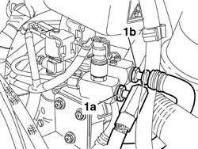
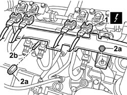
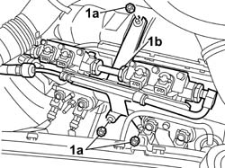
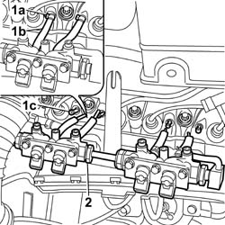

1057B66 GPL INJECTOR UNIT WITH CONNECTION PIPES TO PRESSURE REGULATOR R R
- Path
- Procedures > 10 ENGINE UNIT > 1057 GPL INJECTION SYSTEM > 1057B GPL MULTIPOINT INJECTION FUEL SYSTEM > 1057B66 GPL INJECTOR UNIT WITH CONNECTION PIPES TO PRESSURE REGULATOR R R
- Kind
- repair procedure (removal / refitting; the operation number is the code)
- Applies to
- engines: 2.0 16V; all production periods
- Interactive page
- https://sloeber94.github.io/elrnDB-fDct/en/#/244002697
Applies to: engines: 2.0 16V; all production periods
 Removing
Removing
 Refitting
RefittingDrain the supply pipe from the solenoid valve assembly / G4-G5 to the injectors, following the instructions in the procedure:
Op. 1043A02 LPG SYSTEM LINES PIPE DRAINING OPERATIONS
Disconnect the negative battery terminal.
1. Disconnect the connector (1a) for the flexible supply pipe and the connector (1b) for the flexible return pipe from the injectors; keep the seals underneath taking care not to damage the pipe threaded seats;

Applies to: engines: 2.0 16V; all production periods
1. Disconnect the electrical connectors for the LPG injectors.
Description | Connector | |
|---|---|---|
1 | LPG injector | N073 |
2. Undo the nuts (2a) and move the petrol injector cable loom duct (2b) aside.

Applies to: engines: 2.0 16V; all production periods
1. Undo the nuts (1a) fixing the injector holder bracket (1b) to the cylinder head.

Applies to: engines: 2.0 16V; all production periods
1. Loosen the bands (1a) and disconnect the pipes (1b) connected to the connectors (1c) on the intake manifolds.
2. Release the injector holder bracket complete with injector holder bodies and LPG flexible supply and return pipes.

Applies to: engines: 2.0 16V; all production periods
Refitting
RemovingPosition the injector holder bracket complete with injector holder bodies and LPG flexible supply and return pipes.
Connect the LPG supply pipes to the connectors on the intake manifolds and secure them using the bands.
Fasten the injector holder bracket to the cylinder head and to the tappet cover using the nuts.
Value daNm | Fastening | Component | Ø | |
|---|---|---|---|---|
- | 2.5 | Nut | M8 |
Position the petrol injector cable loom duct and secure it using the nuts.
Connect the electrical connectors for the LPG injectors.
Description | Connector | |
|---|---|---|
- | LPG injector | N073 |
Tighten the connector for the flexible supply pipe and the connector for the flexible return pipe from the injectors to torque.
Value daNm | Fastening | Component | Ø | |
|---|---|---|---|---|
- | 7 | Connector | M18 X 1.5 |
Op. 1043A04 GPL SYSTEM AND PIPES CHECK FOR LEAKS
Connect the negative battery terminal.